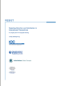

Home / Issues / Anti-Corruption / Guidance Material
Reporting Guidance on the 10th Principle Against Corruption |
|

|
The guidance is the most succinct, practical guide currently available to what anti-corruption aspects companies should report on. It equips business with a practical means to report on anti-corruption policies and actions comprehensively and effectively, as public reporting sends a strong signal to employees, investors and consumers, that a company is serious about clean business. |
>> Reporting Guidance on the 10th Principle Against Corruption (pdf) |
|
RESIST - Resisting Extortion and Solicitation in International Transactions |
|
|  |
February 2009 - A scenario based company tool for employee training developed by the International Chamber of Commerce, Transparency International, the World Economic Forum and the UN Global Compact. |
>> RESIST (pdf) |
|
Clean Business is Good Business |
|
 |
July 2008 - The joint publication of by the International Chamber of Commerce, Transparency
International, the Global Compact and the World Economic forum Partnerring Against Corruption
Initiative (WEF-PACI) offers a short summary of arguments and information, including key facts and
figures; background on international law; overview of countries and industries most prone to the
problem; the business rationale for addressing the issue; and concrete suggestions for what
companies can do.
|
>>
Clean Business is Good Business (pdf)
|
|
Business Fighting Corruption: Experiences from Africa
|
|

|
June 2007 - A collection of case studies showcasing how organizations and businesses in Africa
are addressing the challenge of corruption. The publication is intended to assist managers in
fighting corruption and increasing transparency. To this end, it provides ample evidence that
individuals can contribute to the establishment of value-driven organizational cultures and that
their collective action can help advance more transparent and ethical societies.
|
>>
Experiences from
Africa (pdf)
|
|
Business Against Corruption – Case Stories and Examples |
|

|
April 2006 - 25 examples from business and civil society, giving guidance on how to deal with
difficult dilemma situations when implementing the 10th principle. The compendium covers issues
such as: the implications of the UN Convention against Corruption; the correlation between
corruption, development and governance; implementation of anti-bribery programs; facilitation
payments and gifts; corruption in partnership projects; whistle-blowing and external reporting on
corruption; collective action against corruption, and; engaging in national and regional
initiatives against corruption (UNODC and UN Global Compact).
|
>> Case Stories and Examples (pdf) |
|
Business Against Corruption - A Framework for Action |
|

|
November 2005 - This guide has been produced to assist companies preparing themselves to implement the objectives of the 10th principle and to deal with corruption in every aspect of their operations. It provides a road map to sources and tools which will assist in the practical application of policies designed to eliminate corruption (IBLF, TI and UN Global Compact). |
>>
A Framework for Action
(pdf)
|
|
Guidance Document: Implementation of the 10th Principle against Corruption |
|
|
December 2004 - This document is aimed at giving advice to participants on how to get started with the implementation of the 10th principle and to refer to sources and tools that can be used for such a process. ( UNODC TI, ICC and UN Global Compact). |
|
>>
Guidance
document (pdf)
|
|